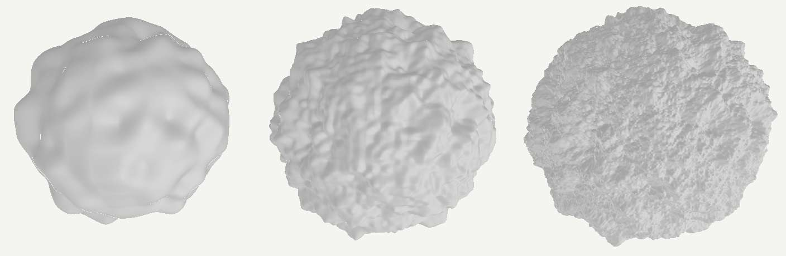

Axel Paris - Research Scientist
Home
Publications
Email
Twitter
Adding Details to Implicit Surfaces
March 2, 2024.
Adding details to implicit surfaces is challenging. As opposed to polygonal meshes, they do not provide an explicit parameterization of the surface which prevents the use of displacement mapping. The goal of this post is to investigate various techniques to workaround this issue and add details to implicit surfaces. We will focus here on implicit surfaces represented as signed distance functions (SDF), whose field function `f \quad : \quad \mathbb R^3 \rightarrow \mathbb \R` returns an estimate of the distance to the surface of the object (see here for a more in-depth explanation). Everything written can also be tested in this shadertoy. These are mostly notes and code snippets for my future self which may be useful to other people.
Noise-based details
The first, probably most straightforward technique to add details is to treat a 3D noise as a signed distance function itself, and combine it with the base SDF. You can see many examples of this in Shadertoy, here or here, just to name a few. This is also referred to as hypertexturing in the litterature. While such technique can theoretically add infinite details, everything comes from the same noise function which suffers from a self-similar appearance. This may be partially solved by combining different functions depending in which region of space we evaluate it. Another downfall of this is that adding 3D noise everywhere may create floaters (detached surface parts floating in space), which is usually not desired.
Implicit sphere combined with 3D noise. As the amount of octaves increases, floaters appear.
We can work around this issue if we refine the problem a little bit. Implicit primitives are also often called skeletal primitives, and their SDF is decomposed into a distance to an infinitly-thin skeleton, and a substraction by a radius. So instead of adding noise to the global SDF, we now add details to a given specific primitive (a sphere, box, or cylinder for instance) and modify its radius with noise. Let's study the case of a sphere, whose SDF is defined from a center `\mathbf{c}` and a radius `r` as:
`f(\mathbf{p}) = ||\mathbf{p} - \mathbf{c}|| - r`
Now let's make the radius also a function `r \quad : \quad\mathbb R^3 \rightarrow \mathbb \R` and define it using a noise `n \quad : \quad \mathbb R^3 \rightarrow \mathbb \R`:
`f(\mathbf{p}) = ||\mathbf{p} - \mathbf{c}|| - r(\mathbf{p})`
`r(\mathbf{p}) = r_b + a n({\pi(\mathbf{p})} / l)`
With `r_b` the base radius, `a` the noise amplitude, `l` the noise wavelength, and `\pi \quad : \quad \mathbb R^3 \rightarrow \mathbb \R^3` the projection function to the surface of the primitive (in this case a sphere). More precisely, the goal is to modify the radius of the primitive using a noise function - but this time, the evaluation is constrained to the surface of the primitive using the projection `\pi(\mathbf{p})`. This avoids the creation of floaters as the noise is not evaluated for every different point in 3D space. This kind of noise-based primitive is also called star-shaped noise, and has been detailed in several papers (here, and more recently in one of my paper here).

So-called star-shaped noise primitives ensure that there are no floaters in the scene. The noise evaluation is constrained to the surface of the underlying skeletal primitive.
This does not come without limitations. As opposed to hypertexturing presented above, star-shaped noise primitive cannot create overhangs on the shape, so the details appear a little more uniform. Details also come from the same noise function, which provides less expressivity and control than traditional texture mapping. Ideally we would want the same flexibility than meshes and displacement maps - which is not possible because of the lack of parameterization of implicit surfaces. Let's look into potential solutions.
Warping implicit surfaces
The equivalent of displacement for implicit surfaces is called warping. A warp is defined as a domain deformation and is widely used in computer graphics: for instance, image warping is commonly found in filters of messaging apps such as Snapchat to make your pictures look weird; in texture synthesis, warping is an essential tool to create procedural textures; and in implicit modeling, warping is used to create more interesting shapes as it deforms space around the object. In essence, a warp is a mapping `\mathbb R^3 \rightarrow \mathbb R^3` that is applied to the point before evaluating the SDF function. There are a lost of possible deformation, including affine transformation (translation, rotation, scale), bending, twisting... You can find a large set of examples on Inigo Quilez website here.
Now the question is: how to parameterize our implicit primitives, and use it for warping? One classical UV-less pipeline used in the industry is based on triplanar mapping (also called box mapping), and it is possible to use this technique for warping implicit surfaces.
Triplanar warping
Triplanar mapping is a well-known technique for on-the-fly parameterization. A great reference from an article in GPU Gems 3 by Ryan Geiss is available online, and there are also detailed blog posts from Catlike Coding and Martin Palko, just to name a few. The idea is to use the world space position of a point `\mathbf{p}` and its normal `\mathbf{n}` to determine a parameterization.
This has a big advantage: the surface you are trying to map to the texture does not need an explicit parameterization, which is perfect for implicit surfaces. The final texture
contribution `T \quad : quad \mathbb R^3, \mathbb R^3 \rightarrow \mathbb \R^3` at a given point `\mathbf{p}` and normal `\mathbf{n}` (considering we sample a RGB texture) can be defined as:
`T(\mathbf{p}, \mathbf{n}) = \sum_{i=0}^{3} \alpha_i(\mathbf{n}) \cdot t \circ \gamma_i(\mathbf{p})`
The weighting function `\alpha_i` computes the contribution of each mapping of `\mathbf{p}` according to the dot product between the normal and the unit axis-aligned vectors:
`\alpha_i(\mathbf{n}) = | \mathbf{n} \cdot u_i |`. The function `\gamma_i \quad : \quad \mathbb R^3 \rightarrow \mathbb R^2` computes the projection of `\mathbf{p}` on the i-th plane in world space
and finally, the function `t \quad : quad \mathbb R^2 \rightarrow \mathbb \R` denotes the 2D function we want to map to our surface, and can be anything from a baked texture to a procedural sum of noises.
If we interpret `t` as a function computing a color, then `T(mathbf{p}, \mathbf{n})` can be used directly to texture a implicit surfaces with albedo. Now what we can also do is deform the geometry of our implicit shape using triplanar warping. In this case, `t` is now a heightfield (or displacement map) and evaluting `T(mathbf{p}, \mathbf{n})` allows to compute the warping strength. As for the warping direction, we use the normal direction `\mathbf{n}` from which we computed our weighting coefficients. The final warping function `w` is then defined as:
`w(\mathbf{p}) = \mathbf{p} - \mathbf{n} \cdot T(\mathbf{p}, \mathbf{n}) `
Then, the new implicit function `\tilde{f}` is defined as the composition of the base shape function `f` and the warping operator:
`\tilde{f}(p) = f \circ w(p)`
As with star-shaped noise, triplanar warping is applied to a specific primitive or subset of primitives - a sphere in the following figure.
Implicit spheres warped with different textures.
While this technique is powerful, it also has limitations. A requirement is that the normal should be continuous. Discontinuities in normals will lead to discontinuities in the warping, which in turn will create holes in the object itself. A typical failure case is a sharp box primitive - we would need a rounded box for the operator to work without visual artifacts, as it provides smooth normals over the entire primitive. Another thing worth mentioning is that it is computationally expensive: triplanar mapping in general is not free, and warping is also known to be expensive in implicit modeling. One could investigate the use of biplanar mapping to save some texture fetchs.
Using this technique also not only break the Euclidean distance property of the SDF (as it is the case for most operations), but is also far from being gentle on the Lipschitz constant of the function (the upper bound of the norm of the gradient, which is 1 for SDF, and is less than 1 known for lower signed distance bounds). The actual Lipschitz constant remains to be computed in this case, but you'll need to divide your sphere tracing steps for the final rendering to be artifacts free. This is also the case for the other two methods presented in this post, but to a lesser extent.
All results presented in this post can be explored in this shadertoy.
Implicit spheres amplified with details from the three different techniques presented in this post, namely hypertexturing (left), star-shaped noise (center) and triplanar warping (right).
References
Wyvill - The Blob Tree - Warping, Blending and Boolean Operations
Implicit Sweep Objects
ScratchAPixel - Rendering Distance Fields
Ryan Geiss - Generating Complex Procedural Terrains Using the GPU
Inigo Quilez - 3D Distance functions